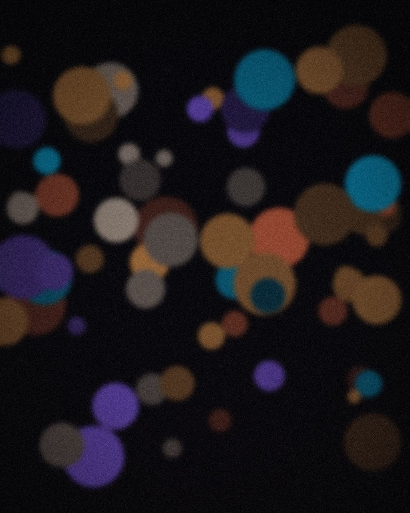
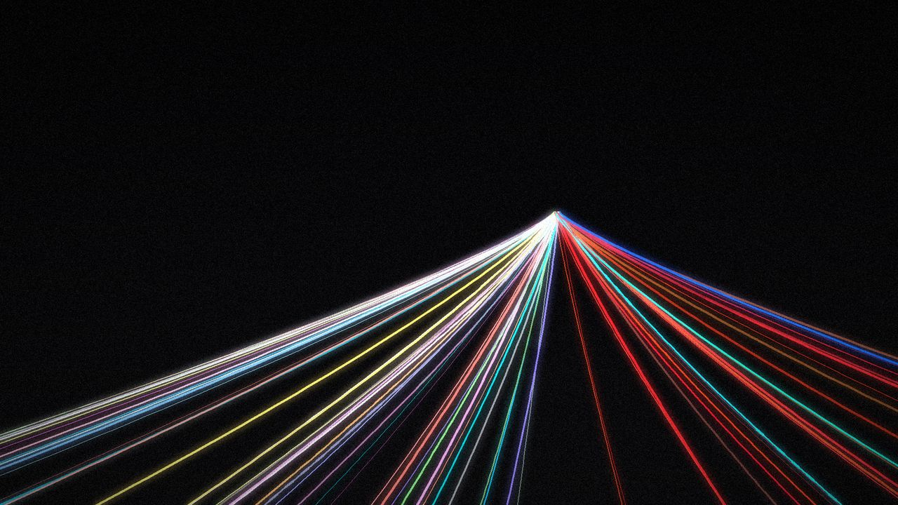
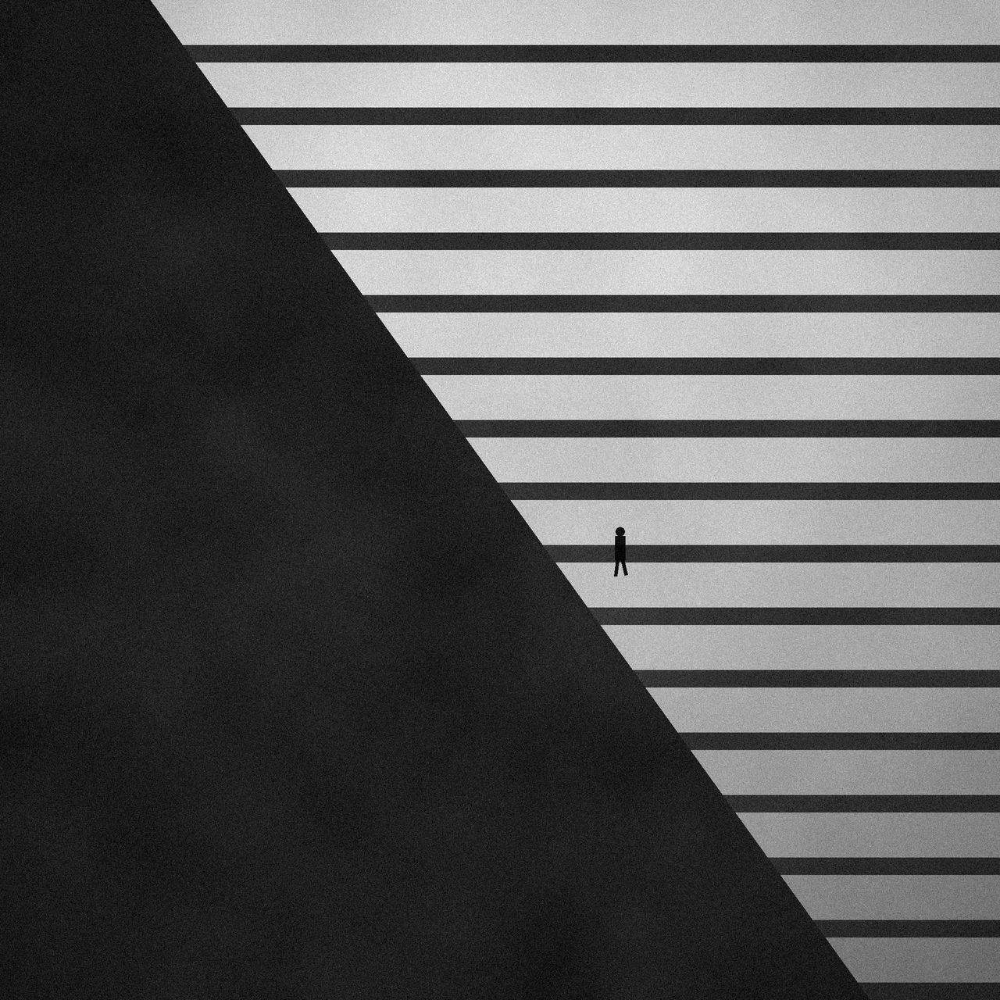

Как выбрать локацию, чтобы она стала частью истории
О чём важно думать, выбирая место: свет, ритм дня, движение и характер пространства.
ReadО чём важно думать, выбирая место: свет, ритм дня, движение и характер пространства.
Read
Как чувствовать себя свободно перед камерой, чтобы кадры получились живыми, а не «постановочными».
Draft
Когда важнее не кадр «как из фильма», а ощущение, что это именно ваша история.
Draft
Главные правила городского света и то, как не «убить» натуральную красоту кадра.
Draft
Как сохранить в кадре не только эмоции, но и ритм обычного дня.
Draft
От тайминга до одежды и деталей — небольшие решения, которые делают день комфортнее.
Draft